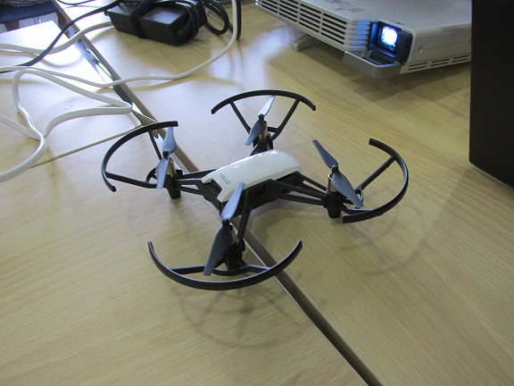
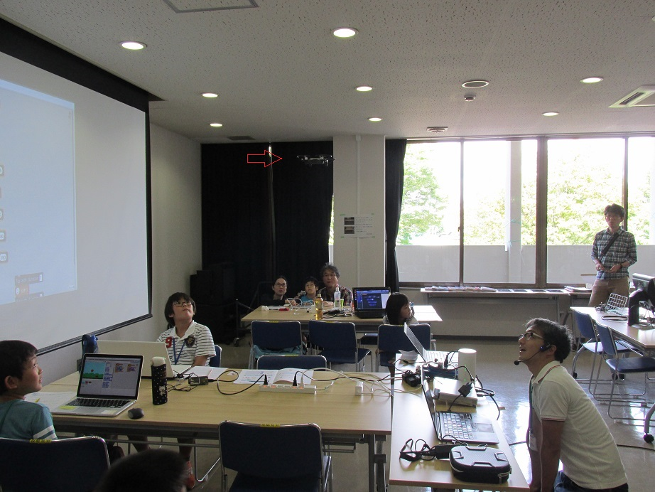
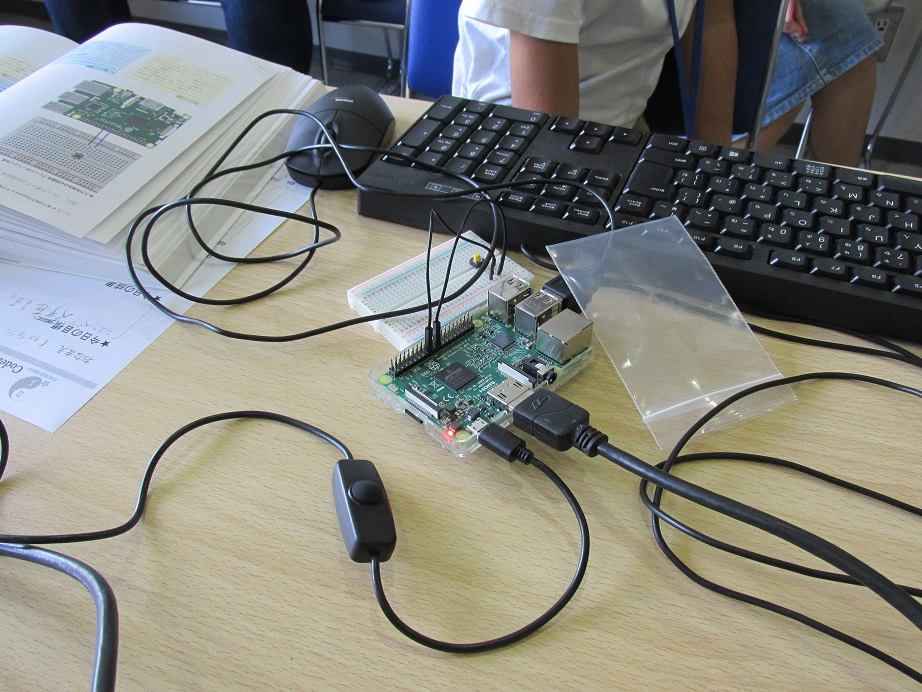
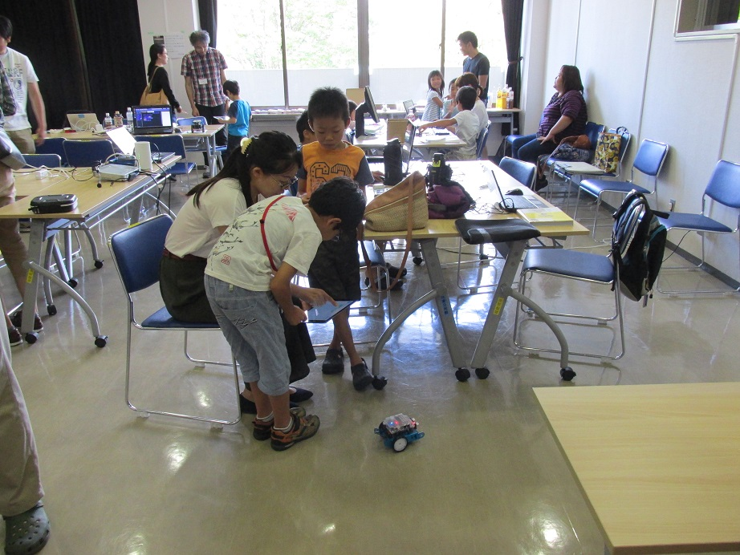
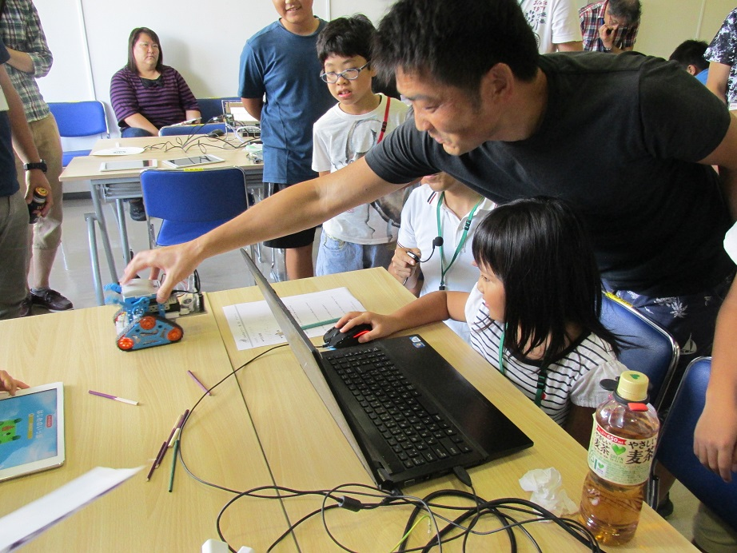
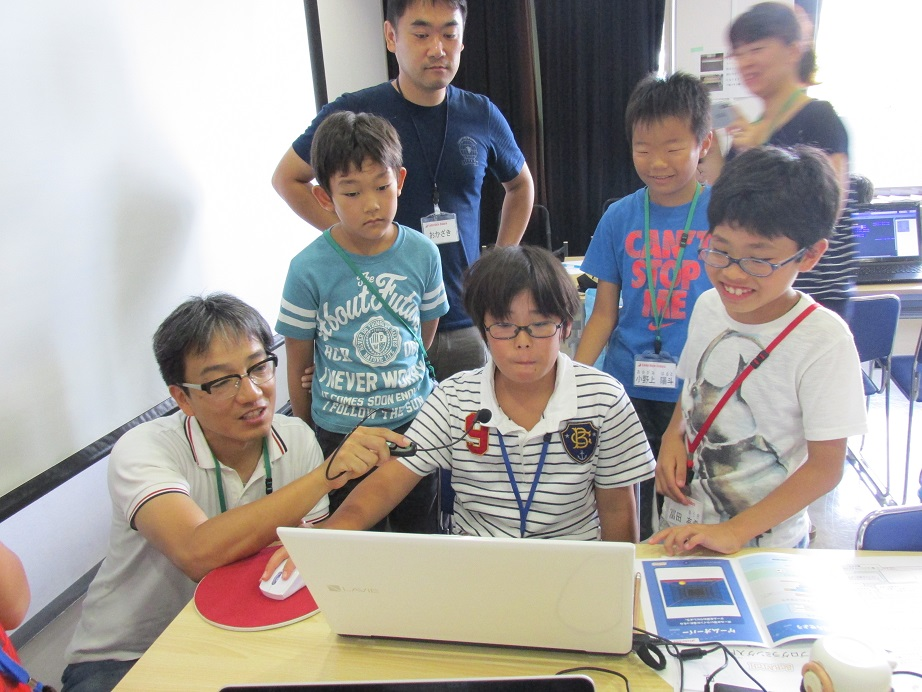
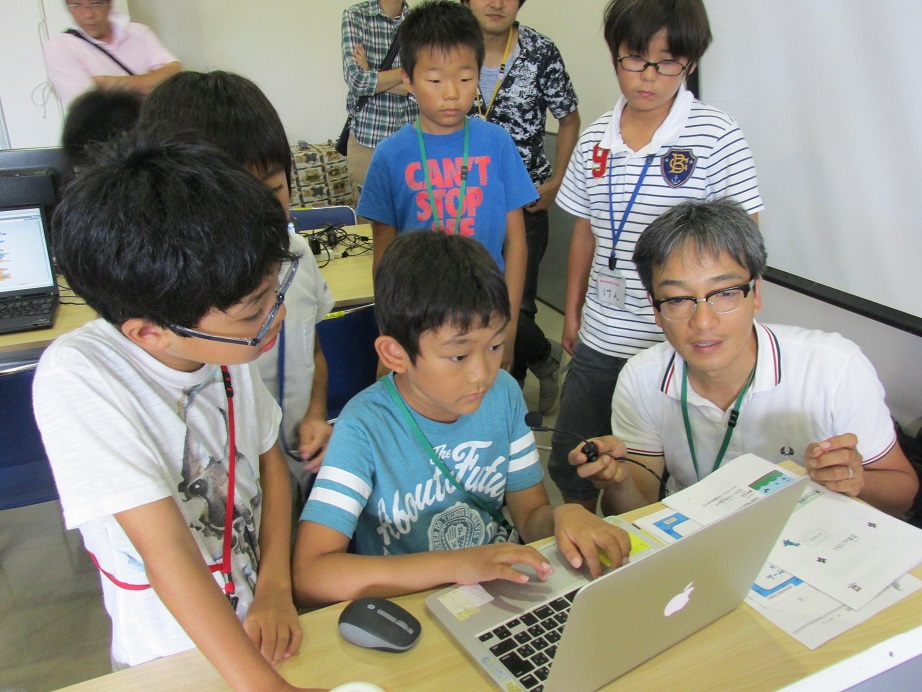
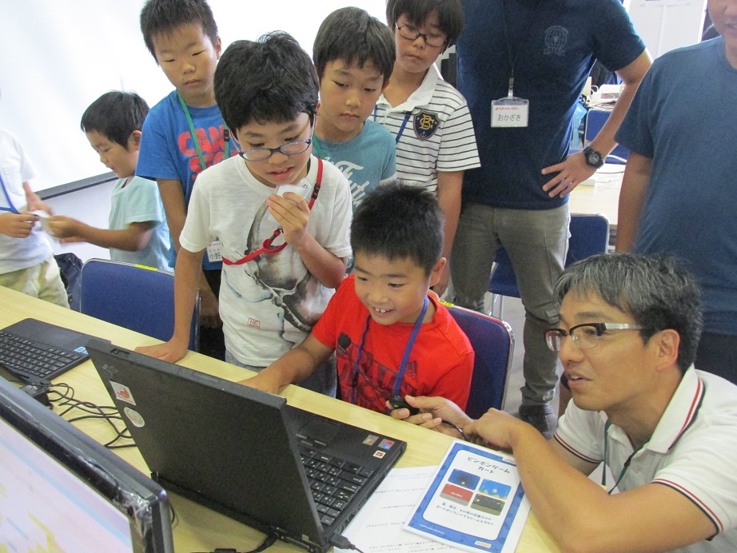
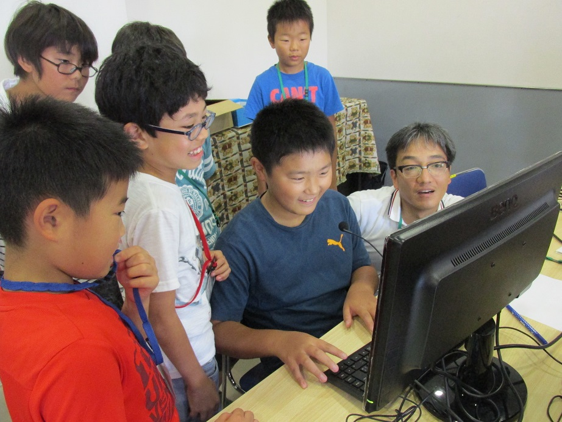
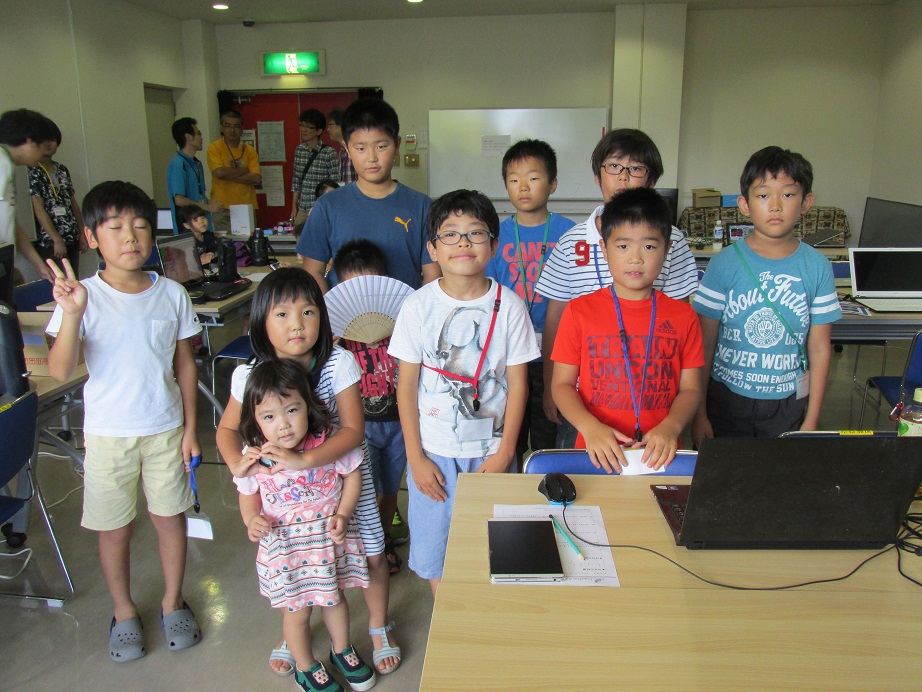

子どものためのプログラミング道場
栃木県 さくら市
栃木県 さくら市
今日は夏休み最終日の日曜日でしたが、たくさんの子どもたちが参加してくれました。

はじめに、トイドローン「Tello」を、Scratchのプログラムで自動運転するデモを行いました。

ちょっとわかりづらいのですが、みんなの視線の先にドローンが飛んでいます。

ラズパイのLEDをPythonで制御しようと頑張ってくれたニンジャさん。

はじめて参加したニンジャに、m-botの使い方を教えてくれているところです。

かわいい～初参加のニンジャが、お父さんと協力してロボットを制御するプログラムを開発しています。

あっという間に？発表タイムの時間になりました。みんなの発表も参考にしてくださいね。




今回も参加者、メンターその他皆さまのご協力のもと、楽しく開催できたことに感謝いたします。次回は第１４回、9月30日(日)を予定しています。ぜひ来てくださいね！

第１３回のダイジェスト動画を作成しました。こちらもぜひご覧ください。